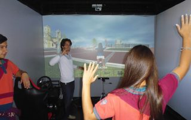
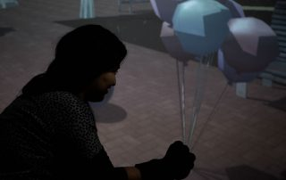
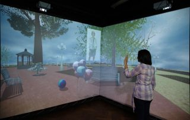
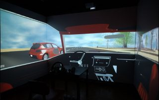
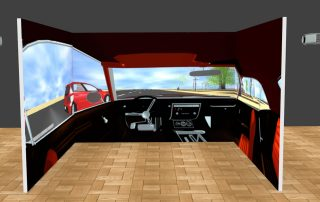

Investigación
Áreas de trabajo, proyectos en curso y producción científica del laboratorio.
Áreas
LaLas líneas de investigación del Laboratorio de Computación Gráfica (LCG) son: Computación Gráfica, Procesamiento de Imágenes, Visión por Computadora, Realidad Virtual, Realidad Aumentada, Interfaces Naturales. De la misma manera, el LCG puede atender las demandas del sector industrial y académico en diferentes áreas
Computación Gráfica
La computación gráfica es el campo de la informática visual, donde se utilizan computadoras para generar imágenes visuales y espaciales del mundo real.
También podemos definirlo como el arte de transmitir información usando imágenes que son generadas mediante procesos computacionales.
Actualmente existen muchas aplicaciones en diversos campos de la ingeniería e investigación científica que demandan una gran cantidad de recursos computacionales. La Computación Gráfica cubre áreas muy diversas, que abarcan desde la visualización científica o ingenieril hasta el arte y el tratamiento fotográfico; las más usuales son:
- Interfaces Gráficas de Usuario (GUI: Graphical User Interface)
- Gráficos estadísticos
- Cartografía
- Medicina
- Diseño Asistido por Computadora (CAD: Computer-Aided Design)
- Multimedios (educativos)
- Entretenimiento (juegos)
Procesamiento de Imágenes
El procesamiento digital de imágenes es el conjunto de técnicas que se aplican a las imágenes digitales con el objetivo de mejorar la calidad o facilitar la búsqueda de información.
En el LCG, las técnicas de procesamiento de imágenes son utilizadas como soporte para las otras áreas del laboratorio.
Actualmente existen muchas aplicaciones en diversos campos de la medicina, la astronomía y la industria que demandan procesos especializados sobre las imágenes.
para la extracción de información. Entre ellos se puede mencionar:
- la microscopía de la luz,
- el sensado remoto y la inspección industrial para la identificación o conteo de objetos,
- la medicina nuclear y el análisis de imágenes biológicas,
- las observaciones astronómicas.
Visión por Computadora
La Visión por Computadora, también conocida como Entendimiento de las imágenes, es una parte de la Inteligencia Artificial que le permite a una máquina reconocer la estructura y propiedades del ambiente representadas en una imagen de la misma manera en que un humano lo realiza. El área aplica métodos tales como procesamiento de imágenes, reconocimiento de patrones, estadísticas y teoría de grafos.
En el LCG, las técnicas de visión por computadora son utilizadas como soporte para las áreas de Realidad Virtual y Realidad Aumentada. Estas técnicas procesan las imágenes capturadas por cámaras que proveen los datos necesarios para las aplicaciones finales (por ej.: detección de objetos en una escena, estimación de la profundidad para la interacción, etc.). Las técnicas más comúnmente utilizadas en visión por computadora son:
- Segmentación
- Extracción de características
- Stereo Matching
- Reconocimiento Facial
- Reconstrucción de escenarios
Realidad Virtual
El término Realidad Virtual hace referencia a cualquier ambiente generado por computadora donde es posible simular la presencia física en diferentes lugares del mundo real o mundo imaginario. El grado de presencia dentro del ambiente virtual depende de cuan inmersos estén nuestros sentidos. Para obtener esto, la RV hace uso de la representación de gráficos estereoscópicos en tiempo real a través de diferentes tipos de dispositivos de visualización (Head Mounted Display, SteroWall, CAVE, etc.), sistemas de seguimiento de uno o varios usuarios y dispositivos sensoriales hápticos.
En trabajo del LCG se ha focalizado principalmente en la generación de contenido y aplicaciones 3D realistas que ayuden al usuario a sentirse más involucrado con el contenido presentado.
Entendemos a la RV como una tecnología clave no sólo para la simulación y visualización de experiencias sino también como una herramienta que permite ayudar con los problemas de la vida real. Con esta idea en mente, nuestros proyectos de RV se han orientado a detectar y tratar aquellos problemas tales como el aprendizaje de principios y hábitos sociales, tratamiento de traumas y/o terapéuticos, entre otros.
Aplicaciones
- Diseño, modelado y visualización de objetos y lugares de interés tales como construcciones, ambientes, productos, etc..
- Reconstrucción y visitas virtuales de lugares históricos reales y patrimoniales.
- Visualización de datos complejos y simulación de procesos.
- Formación y entrenamiento de personas en forma colaborativa para desarrollar procesos complejos o peligrosos.
- Investigación científica, en particular en medicina, para reproducir virtualmente condiciones de la vida real y estudiar las reacciones de los usuarios en un modo controlado y práctico
Realidad Aumentada
El objetivo de la Realidad Aumentada es la integración del contenido generado por una computadora sobre un video en vivo o el ambiente del usuario en tiempo real. Es, literalmente, la práctica de realzar lo que observamos a nuestro alrededor. A diferencia de la Realidad Virtual, la Realidad Aumentada no crea una simulación de la realidad. En su lugar, ésta toma un objeto o espacio real como base y le adiciona datos contextuales para que una persona pueda comprender más profundamente su contexto. El ejemplo más comúnmente utilizado, y por consiguiente, una de las mayores aplicaciones comerciales de la tecnología RA es la línea amarilla de “fuera de juego” que se observa en los partidos de fútbol por televisión.
En el LCG se han desarrollado proyectos de RA mediante el uso de smartphones o monitores de computadoras que intentan crear experiencias en las cuales el usuario puede apreciar la diferencia entre observar solamente el mundo real o la versión aumentada del mismo. Esta técnica provee una marco de desarrollo para el estudio e investigación en un amplio rango de áreas tales como el entretenimiento, entrenamiento militar, diseño ingenieril, robótica, manufactura y otros.
Aplicaciones:
- El seguimiento de usuarios en un ambiente desconocido.
- La representación de información contextual superimpuesta acorde con la geometría del ambiente.
- La reconstrucción de ruinas, edificios, o aún paisajes según como ellos fueron originalmente.
- La generación de contexto interactivo que asista en el proceso de aprendizaje. La RA permite también el aprendizaje vía colaboración remota.
- Como soporte a la toma de decisiones, permitiendo a los diseñadores industriales experimentar el diseño de un producto y su operación antes de que el mismo sea completado.
- En resolución de tareas complejas tale como el ensamble, el mantenimiento y la cirugía.
- Para la visualización de proyectos de construcción antes que los mismos sean construidos. La visualización de proyectos de arquitectura pueden ser realzados mediante aplicaciones de RA que permitan a los usuarios observar el exterior de los edificios y navegar virtualmente a través de sus paredes mostrando su estructura interior y los objetos que contiene.
Interfaces Naturales
La interfaz natural de usuario es el tipo de interfaz de usuario en las que se interactúa con un sistema o aplicación sin utilizar sistemas de mando o dispositivos de entrada tradicionales, y en su lugar, se hace uso de movimientos gestuales del cuerpo o de alguna de sus partes tales como las manos, sirviendo de mando de control.
Las aplicaciones de las Interfaces Naturales de Usuario son innumerables; diversos sectores como el industrial, automotriz, salud, distribución, educación ya se están beneficiando del potencial de estas interfaces. Entre ellos se pueden mencionar:
- sistemas de información quirúrgica diseñados para ser manipulados en quirófanos de forma intuitiva y sin necesidad de contacto,
- probadores de ropa virtuales,
- visualizadores que pueden reproducir físicamente e interactuar con 3D objetos reales,
- simuladores de entornos para adiestramiento o rehabilitación.
Proyectos
-

Permalink
EscleroGym
El proyecto consiste en el desarrollo de un espacio de rehabilitación virtual inmersiva con Kinect para personas con Esclerosis Múltiple.
-

Permalink
ACV-Terapia
El presente proyecto consiste en el desarrollo de un espacio de rehabilitación virtual con Guantes de Datos para personas con Accidente Cerebrovascular (ACV), dentro de un ambiente integrado de Realidad Virtual inmersiva tipo CAVE (Computer Assisted Virtual Environment).
-

Permalink
DIME
El proyecto consiste en la implementación de un Personaje Conversacional Virtual dentro de un ambiente integrado de Realidad Virtual Inmersiva tipo CAVE (Computer Assisted Virtual Environment).
-

Permalink -


CONDUCE
El proyecto consiste en la implementación de un modelo informático que simule la dinámica de un vehículo y su comportamiento ante distintas situaciones a las que se verá sometido durante su conducción dentro de ambiente integrado de Realidad Virtual Inmersiva tipo CAVE (Computer Assisted Virtual Environment).
Alfa GAVIOTA
Este proyecto persigue tres objetivos principales: 1)- Aportar soluciones “low cost” en la aplicación de Realidad Virtual, Realidad Aumentada e Interacción avanzada en los campos de la Arquitectura, Educación e Informática. 2)- Promover una transferencia de conocimiento de los logros en estos ámbitos desde las universidad hacia la sociedad (colectivos desfavorecidos, alumnos/profesores, administración, empresa, etc…), 3)- Conseguir una institucionalización educativa de las experiencias, de manera que los resultados se puedan utilizar en Educación Superior.
Alfa T-GAME L3
Nombre Alfa T-GAME L3 (Teaching computer Graphics And MultimEdia Lifelong Learning) Descripción Red de Instituciones de Enseñanza Superior (IES) de la Unión Europea y América Latina para la compatibilización y el mejoramiento de la enseñanza en el ámbito de la Informática Gráfica y la Multimedia dentro
1 2 NextPublicaciones
Capítulos de Libros
2017
Yoselie Alvarado, Claudia Gatica, Veronica Gil Costa, Roberto Guerrero – “Evaluating the spoken dialogue system of a conversational carácter: A Simulation Study”, Libro Computer Science & Technology Series XXII Argentine Congress of Computer Science- Selected Papers, Pp. XXX-XXX, ISBN: XXX-XXX-XXXX-XX-X, Editores: Guillermo Feierherd, Patricia Pesado, Claudia Russo, Editorial de la Universidad de la Plata, 2017.
2016
Jofré N., Rodríguez G., Alvarado Y., Fernández J., Guerrero R. – “A Serious Game based on Crowdsourcing”, Libro Computer Science & Technology Series XXI Argentine Congress of Computer Science- Selected Papers, Pp. 127-136, ISBN: 978-987-4127-00-6, Editores: Guillermo Feierherd, Patricia Pesado, Claudia Russo, Editorial de la Universidad de la Plata, 2016.
2014
Yoselie Alvarado, Nahuel Moyano, Diego Quiroga, Jacqueline Fernandez, and Roberto A. Guerrero – “A Virtual Reality Computing Platform for Real Time 3D Visualization”, Libro “Realidades virtuales aumentadas para el desarrollo social: Experiencias entre Europa y Latinoamérica”, pp. 214-231, ISBN 978-950-757-046-9, Editor: Mónica Inés Fernández, Editorial Universidad de Belgrano, Buenos Aires, Enero de 2014.
Francisco José Serón Arbeloa, Carlos Vaz de Carvalho, Melanie Saul, Frank Deinzer, Roberto A. Guerrero, Juan Carlos Parra Márquez, Cristiano Costa and Sandro Rigo, “Realidad virtual, realidad aumentada y computación ubicua: conceptos, tecnología y práctica“, Libro “Realidades virtuales aumentadas para el desarrollo social: Experiencias entre Europa y Latinoamérica”, pp. 47-68, ISBN 978-950-757-046-9, Editor: Mónica Inés Fernández, Editorial Universidad de Belgrano, Buenos Aires, Enero de 2014.
2013
Yoselie Alvarado, Nahuel Moyano, Diego Quiroga, Jacqueline Fernandez, and Roberto A. Guerrero – “A Virtual Reality Computing Platform for Real Time 3D Visualization”, Computer Science & Technology Series XVIII Argentine Congress of Computer Science- Selected Papers, Pp. 135-158, ISBN: 978-987-1985-20-3, Editores: Armando De Giusti , Javier Diaz, Patricia Pesado, Editorial Universidad de La Plata, 2013.
2006
Breutmann B., Kreiner-Wegener A., Fernández M., Piegari R., Guerrero R., Fernández J., Felix N., Borda A., Abad A., Pina A., Huizi L., Serón F., Latorre P., Sobreviela E., Cerezo E., Baldassarri S., Carvalho C., Costa A., Payssé M., Portillo J., Fernández E. – “T-GameL3: Development of an Interdisciplinary Lifelong e-Learning Experience in an International Context”. 5th. European Conference on e-Learning (ECEL 2006), Academic Conferences Limited, University of Winchester, pp. 46-53, ISBN 1905305303, 978-1-905305-30-8, Editores: A. Angulo y G. Vázquez de Velasco, Winchester – UK, September 11, 2006.
http://www.academic-conferences.org/ecel/ecel2006/ecel06-committee.htm
2005
Breutmann B., Fernández M., Piegari R.., Guerrero R.., Borda A., Rodríguez N., Pina A., Huizi L., Serón F., Latorre P., Vaz C., Payssé M., Portillo J.- “Proyecto Red ALFA T_GAME L3 (Teaching Computer Graphics And Multimedia Long-Life Learning): Gestión institucional interdisciplinaria de servicios de extensión universitaria”, Anales del IX Congreso de la Sociedad Iberoamericana de Gráfica Digital (SIGraDi), Vol. 1, pp. 355-361, ISBN 1-59975-306-5, Editor: Joan Ballantines – SIGRADI Press, Lima – Perú, Noviembre 21, 2005.
http://cumincades.scix.net/cgi-bin/works/Show?sigradi2005_355
Publicaciones Internacionales
Revistas
2017
Yoselie Alvarado, Roberto Guerrero, Francisco Serón – “Be Civic: An Immersive Serious Game” – EAI Endorsed Transactions on Serious Games, EAI, Vol 4, N° 12, pp XX-XX, ISSN: 2034-8800, MonthXX 2017. http://eudl.eu/issue/sg/3/11.
N. Jofré, G. Rodríguez, Y. Alvarado, J. Fernández, R. Guerrero – “Gestural Interaction for Virtual Reality Environments through Data Gloves” – Advances in Science, Technology and Engineering Systems Journal, ASTES Publishers, Vol X, N° XX, pp XX-XX, ISSN: 2415-6698, MonthXX 2017. http://www.astesj.com/.
2015
N. Jofré, G. Rodríguez, Y. Alvarado, J. Fernández, R. Guerrero – “Natural Interface for Recycling Activity”, presentado y publicado en el 6th International Symposium on Innovation and Technology (ISIT2015), ISBN: 978-612-45917-9-2, ISSN: 2305-9958, http://iiitec.org, Vol 6, Pp xx-xx, Mar del Plata, Argentina, Agosto 13-14, 2015.
2014
J. Fernandez, N. Arellano, M.V. Rosas, M. Zuñiga, R. Guerrero – “Una experiencia en la enseñanza de la programación para la permanencia de los alumnos de Ingeniería Electrónica”, presentado y publicado en la Revista “Enseñanza y Aprendizaje de Ingeniería de Computadores”, editada por el Departamento de Arquitectura y Tecnología de Computadores de la Universidad de Granada – ISSN: 2173-8688 – Vol. 4 – Pp 69 – 79 – España, 2014.
http://atc.ugr.es/pages/
2010
Roberto A. Guerrero, Francisco J. Serón Arbeloa – “Sgraffito Simulation through Image Processing”, publicado en los anales de International Conference on Graphic and Image Processing (ICGIP 2010), Pp. 106-112, Editor Zhou Jianhong, IEEE Catalog Number: CFP1083L-ART, ISBN: 978-1-4244-9017-2, Manila, Philippines, December 4-5, 2010.
Eugenio J. Chappero, Roberto A. Guerrero, and Francisco J. Serón – “Vanishing Point estimation from monocular images”, aceptado para su publicación en los anales de 9th International Information and Telecommunication Technologies Symposium (I2TS’ 2010), IEEE, Pp. 177-182, ISBN: 978-85-64030-00-8, Rio de Janeiro, Brasil, December 13-15, 2010.
2009
J Fernández, N. Miranda, R. Guerrero, F. Piccoli – “Image identification thru Multi-levels parallelism”, presentado y publicado en los anales de la 8th International Information and Telecommunication Technologies Symposium (I2TS´2009), IEEE. Pp. 314-328, ISBN: 978-85-89264-11-2, Florianopolis, DF – Brazil, December 2009.
2007
J Fernández, N. Miranda, R. Guerrero, F. Piccoli – “Analyzing Parallelism into an Image Mining: System”, presentado y publicado en los anales del 6th International Information and Telecommunication Technologies Symposium (I2TS´2007), IEEE. Pp. 95-102, ISBN: 978-85-89264-08-X, Brasília, DF – Brazil, December 12, 2007.
1999
Guerrero R., Piccoli F., Printista M., – “Parallelism and Granularity in an Echo Elimination System” – presentado y publicado en los Proceedings de la 12th International Conference on Control Systems and Computer Science, IEEE, Pp 232-237, ISBN 973-96609-5-9, Polithecnic University of Bucharest, Romania, May 26, 1999.
1993
Guerrero R., Leguizamón G., Gallard R.. – “Implementation and Evaluation of Alternative Process Schedulers in Minix” – ACM SIGOPS Operating Systems Review, ACM Press, USA, Vol 27, N° 1, pp 79 – 100, ISSN:0163-5980, January 1993.
http://portal.acm.org/citation.cfm?id=160551.16055.
1991
Aguirre G., Errecalde M., Guerrero R., Kavka C., Leguizamon G., Printista M., Gallard R. – “Experiencing Minix as a Didactical Aid for Operating System Courses” – ACM SIGOPS, Operating Systems Review, ACM Press, USA ,Vol 25, N° 3, pp 32-39, ISSN: 0163-5980, Julio 1991.
http://doi.acm.org/10.1145/122572.122575
Congresos con referato
2015
Armando De Giusti, María José Abásolo, Marcelo Naiouf, Silvia Castro, Roberto Guerrero, “Computer Graphics and Vision Labs in Argentina”, presentado y publicado en los Proceedings del 23th International Conference in Central Europe on Computer Graphics, Visualization and Computer Vision (2015), Pp 117-120. ISBN: 978-80-86943-67-1. Vaclav Skala – Union Agency Press, Pilsen, Czech Republic – June 08-12, 2015.
2007
J Fernández, N. Miranda, R. Guerrero, F. Piccoli – “Image Mining: a Review”, presentado y publicado en los anales de la International Conference on Data Mining (DMIN07), Pp 383-389. ISBN: 1-60132-031-0. CSREA Press. Las Vegas – USA, June 26, 2007.
2003
B. Breutmann, M. Fernández, R. Piegari, R. Guerrero, A. Borda, N. Rodríguez, A. Pina, F. Serón, P. Latorre, C. Vaz, M. Payssé, – “Proyecto ALFA T_GAME (Teaching Computer Graphics And MultimEdia): Una experiencia de intercambio de materiales docentes para el area de Informática Gráfica y Multimedia”, presentado y publicado en los Anales del XIII Congreso Español de Informática Gráfica, pp. 329-333, ISBN: 84-9749-072-X, Univ. de La Coruña, La Coruña, España. July 2, 2003.
2001
Fernandez J., Guerrero R., Piccoli F., Printista M., – “Parallelism: An inherent solution in the Echo Elimination on True Color Images” – presentado y publicado en los Proceedings de la 5th World Multiconference on Systemics, Cybernetics and Informatics (SCI 2001) and 7th International Conference on Information Systems Analysis and Synthesis (ISAS 2001), vol. IX, pp 231-236, ISBN 980-07-7549-8, IIIs y IEEE Publishers, Orlando, USA, July 22, 2001.
1998
Guerrero R., Piccoli F., Printista M., Colavita A., – “A Parallel Approach of an Image Processing System on PVM” – presentado y publicado en los Proceedings de la International Conference on Computer Systems and Applications, IASTED, pp 17-20, ISBN N 0-88986-264-8, Yarhouk University, Jordan, March 30, 1998.
Publicaciones Nacionales
Congresos con referato
2016
Jofré, G. Rodríguez, Y. Alvarado, J. Fernández, R. Guerrero – “Non-Verbal Communication Interface Using a Data Glove”, IEEE Congreso Argentino de Ciencias de la Informática y Desarrollos de Investigación (CACIDI 2016), Pp.170-175, IEEE Catalog Number: CFP16H47-POD, ISBN: 978-1-5090-2939-6, Ciudad Autónoma de Buenos Aires, Argentina, 30 Noviembre al 2 Diciembre, 2016.
Yoselie Alvarado, Claudia Gatica, Veronica Gil Costa, Roberto Guerrero – “Evaluating the spoken dialogue system of a conversational carácter: A Simulation Study”, expuesto y publicado en los anales del XXII Congreso Argentino de Ciencias de la Computación (CACIC 2016), Pp. 261-270, ISBN: 978-987-733-072-4, San Luis, Argentina, Octubre 3-7, 2016.
Jofré N., Rodríguez G., Alvarado Y., Fernández J., Guerrero R. – “Non-Verbal Communication for a Virtual Reality Interface”, expuesto y publicado en los anales del XXII Congreso Argentino de Ciencias de la Computación (CACIC 2016), Pp. 291-300, ISBN: 978-987-733-072-4, San Luis, Argentina, Octubre 3-7, 2016.
2015
N. Jofré, G. Rodriguez, Y. Alvarado, J. Fernández, and R. Guerrero. “A Serious Game about Recycling Rules”, expuesto y publicado en los anales del XXI Congreso Argentino de Ciencias de la Computación. Pp. 262-271, ISBN: 978-987-3724-37-4, Universidad Nacional del Noroeste de la Provincia de Bs. As.. Junín. Octubre 5-9, 2015.
2014
N. Jofré, G. Rodriguez, Y. Alvarado, J. Fernández, and R. Guerrero. “Virtual Humans: Conversational Characters for a Cave-Like Environment”, expuesto y publicado en los anales del XX Congreso Argentino de Ciencias de la Computación. Pp 937-946. ISBN 978-987-3806-05-6, Universidad Nacional de La Matanza. Octubre 20, 2014.
2012
Yoselie Alvarado, Nahuel Moyano, Diego Quiroga, Jacqueline Fernandez, and Roberto A. Guerrero – “A Virtual Reality Computing Platform for Real Time 3D Visualization”, expuesto y publicado en los anales del XVIII Congreso Argentino de Ciencias de la Computación (CACIC 2012), Pp. 456-465, ISBN: 978-987-1648-34-4, Bahia Blanca, Argentina, October 8-12, 2012.
2010
Eugenio J. Chappero, Roberto A. Guerrero , and Francisco J. Serón – “Lineal Perspective Estimation on Monocular Images”, expuesto y publicado en los anales del XVI Congreso Argentino de Ciencias de la Computación (CACIC 2010), Pp. 444-454, ISBN: 978-950-9474-49-9, Buenos Aires, Argentina, October 18-22, 2010.
2009
Fernández J., Miranda N., Guerrero R., Piccoli F. “Multi-level Paralelism in Image Identification”. XVIII Congreso sobre Métodos Numéricos y sus Aplicaciones, (ENIEF 2009) Vol 28. Pp: 227-240. ISSN 1666-6070. Univ. Del Centro de la Prov. de Buenos Aires. Tandil – Bs. As. Noviembre 2009.
2008
Fernández J., Miranda N., Guerrero R., Piccoli F. “A Distributed Computing for an Image Processing Function Set”. XVII Congreso sobre Métodos Numéricos y sus Aplicaciones, (ENIEF 2008), Pp: 2895-2906. ISSN 1666-6070. Univ. Nac. de San Luis. San Luis. Noviembre 10, 2008.
Fernández J., Miranda N., Guerrero R., Piccoli F. “Driving to a Fast IMS Feature Vector Computing”. 14to Congreso Argentino de Ciencias de la Computación (CACIC 2008), Pp 1993-2004, ISBN 978-987-24611-0-2, Univ. Nac. de Chilecito, La Rioja, Argentina. Octubre 1, 2008.
2007
Guerrero R., Serón F. – “No Foto Realismo con Esgrafiado”, expuesto y publicado en los anales del 13vo. Congreso Argentino de Ciencias de la Computación (CACIC 2007), Pp 721-732, ISBN 978-950-656-109-3, Univ. Nac. del Nordeste, Corrientes, Argentina. Octubre 1, 2007.
Fernandez J., Guerrero R., Miranda N., Piccoli F. – “Towards a Parallel Image Mining System”, expuesto y publicado en los anales del 13vo. Congreso Argentino de Ciencias de la Computación (CACIC 2007), Pp 787-797, ISBN 978-950-656-109-3, Univ. Nac. del Nordeste, Corrientes, Argentina. Octubre 1, 2007.
2006
G. Abdala, R. Guerrero, F. Piccoli – “Una Solución Paralela Simple al Método de Difusión de Error”, expuesto y publicado en los anales del 12vo. Congreso Argentino de Ciencias de la Computación (CACIC 2006), Pp 851-864, ISBN 950-609-050-5, Univ. Nac. de San Luis, San Luis, Argentina. Octubre 17, 2006.
2005
Guerrero R., Leguizamón G., Viano H. – “An Importance Driven Genetic Algorithm for the Halftoning Process”, expuesto y publicado en los anales del 11vo. Congreso Argentino de Ciencias de la Computación, Pp 241-251, ISBN 950-698-166-3, Univ. Nac. de Entre Ríos, Concordia, Octubre 2005.
2003
Breutmann B., Fernández M., Piegari R., Guerrero R., Borda A., Pina A., Serón F., Latorre P., Vaz de Carvalho C., Payssé M., – “Proyecto Red ALFA T_GAME (Teaching Computer Graphics And MultimEdia): Una experiencia Interdisciplinaria”, presentado y publicado en los Anales del VII Congreso de la Sociedad Iberoamericana de Gráfica Digital (SIGraDi), Pp. 394-397, ISBN: 987-9459-51-2, Rosario – Argentina. Noviembre 5, 2003. http://cumincades.scix.net/cgi-bin/works/Show?sigradi2003_135
2002
Guerrero R., Buchanan J. – “Color Importance Driven Halftoning”, expuesto y publicado en los anales del 8vo. Congreso Argentino de Ciencias de la Computación, Pp 554-565., ISBN XXX, Univ. Nac. de Buenos Aires, Buenos Aires, Argentina. Octubre 16, 2002.
Cagnina L., Guerrero R. – “Aplicación de una Técnica de Visión en la Evaluación de Métodos de Reconstrucción”, expuesto y publicado en los anales del 8vo. Congreso Argentino de Ciencias de la Computación, Pp 193-204., ISBN XXXX, Univ. Nac. de Buenos Aires, Buenos Aires, Argentina. Octubre 16, 2002.
2001
Fernández J., Guerrero R., Píccoli F., Printista M., Villalobos M. – “Enhancing Data Parallel Aplications with Task Parallelism”, expuesto y publicado en los anales del 7to. Congreso Argentino de Ciencias de la Computación, Vol II, pp 683-694., ISBN 987-96-288-6-1, Univ. Nac. de la Patagonia Austral, El Calafate, Argentina, Octubre 16, 2001.
Aguirre J., Guerrero R., Oviedo J., Quintas L. – “Computation of Indices of Power with Incompatibilities”, expuesto y publicado en los anales del 7to. Congreso Argentino de Ciencias de la Computación, Vol II, pp 297-308., ISBN 987-96-288-6-1, Univ. Nac. de la Patagonia Austral, El Calafate, Argentina, Octubre 16, 2001.
2000
Costa C., Guerrero R., Roche I. – “Reconstructing Land’s Appereance”, expuesto en calidad de poster, en el 6to.. Congreso Argentino de Ciencias de la Computación, Pp 1120-1127, ISBN 950-763-033-3, Univ. Nac. de la Patagonia San Juan Bosco, Octubre 2, 2000.
1998
Guerrero R., Píccoli F., Printista M. – “Improvement of a Parallel System for Image Processing”, expuesto y publicado en los anales del 4to.. Congreso Argentino de Ciencias de la Computación, Vol II, Pp 655-664., ISBN 0-88986-264-8, Univ. Nac. del Comahue, Neuquén, Argentina. Octubre 26, 1998.
1997
Gonzalez A., Guerrero R., Zavala A., Colavita A. – “Aplicación de un Sistema Homomórfico a la Detección de Ecos en Señales de Video Blanco/Negro”, expuesto y publicado en los anales del 3er. Congreso Argentino de Ciencias de la Computación, Pp 145-156., ISBN 950-34-102-X, Univ. Nac. de la Plata, La Plata, Argentina. Setiembre 29, 1997.
1996
Guerrero R., Ludueña V. – “Presentándonos en Internet: Creación de Páginas Web”, expuesto y publicado en las 2das. Jornadas sobre Informática, Educación y Sociedad, La Pampa, Argentina. Octubre 31, 1996.
Guerrero R., Ludueña V. – “Presentándonos en Internet: Creación de Páginas Web”, expuesto y publicado en los anales del II Congreso y Exposición Internacional de Informática y Telecomunicaciones (INFOCOM ´96), Pp 421-428, Bs. As, Argentina. Junio 10, 1996.
1992
Guerrero R., Leguizamon G., Gallard R. – “Alternative Process Scheduling in a Unix Clone Operating System” – 21 JAIIO, pp 3.85-3.94, Centro Cultural San Martín, Bs As, Argentina. Agosto 30, 1992.
Guerrero R., Leguizamon G., Gallard R. – “Evaluation of Alternative Process Scheduling in a Unix Clone Operating System“, expuesto y publicado en los anales de las Jornadas. 21 JAIIO, Pp 3.95-3.111, Centro Cultural San Martín, Bs As, Argentina. Agosto 30, 1992.
Eventos científicos con referato
2017
Jofré N., Rodriguez G., Alvarado Y., Fernández J., Guerrero R. – “El uso de la Realidad Virtual Inmersiva en terapias motrices”, XIX Workshop de Investigadores en Ciencias de la Computación, ISBN XXX-XXX-XXX-XXX-X, Instituto tecnológico de Buenos Aires, Buenos Aires, Argentina, Abril 27-28, 2017.
2016
Jofré N., Rodriguez G., Alvarado Y., Fernández J., Guerrero R. – “La Realidad Virtual en los Comportamientos Sociales”, XVIII Workshop de Investigadores en Ciencias de la Computación, ISBN 978-950-698-377-2, Univ. Nac. De Entre Ríos, Concordia – Entre Ríos, Argentina, Abril 14-15, 2016.
2015
Jofré N., Rodríguez G., Alvarado Y., Fernández J., Guerrero R. -“Interacción Humano-Computadora: Personajes Virtuales”, XVII Workshop de Investigadores en Ciencias de la Computación, ISBN 978-987-633-134-0, Univ. Nac. De Salta, Salta, Argentina, Abril 16-17, 2015.
2014
M. E. Zúñiga, M. V. Rosas, J. M. Fernández, R. A. Guerrero. – “El Desarrollo del Pensamiento Computacional para la Resolución de Problemas en la Enseñanza Inicial de la Programación” , XVI Workshop de Investigadores en Ciencias de la Computación, Pp 340-343, ISBN 978-950-34-1084-4, Univ. Nac. de Tierra del Fuego, Antártida e Islas del Atlántico Sur, Ushuaia – Tierra del Fuego, Argentina, Mayo 7-8, 2014.
Alvarado Y., Fernández J., Guerrero R. – “Vida artificial y personajes virtuales”, XVI Workshop de Investigadores en Ciencias de la Computación, Pp 300-304, ISBN 9789503410844, Univ. Nac. De Tierra del Fuego, Antártica e Islas del Atlántico Sur, Ushuaia – Tierra del Fuego, Argentina, Mayo 7-8, 2014.
2013
Alvarado Y., Zúñiga M., Pahud F., Fernández J., Guerrero R. – “Simulación de Personajes Conversacionales Virtuales Dentro de un Entorno De Realidad Virtual”, XV Workshop de Investigadores en Ciencias de la Computación, Pp 254-258, ISBN 9789872817961, Univ. Nac. de La Plata, La Plata – Buenos Aires, Argentina, Abril 17-19, 2013.
2012
Mario Baudino, Veronica Gil-Costa, Andrea Giubergia, Roberto Guerrero, Marcela Printista. – “Modelos de simulación: selección y reemplazo de equipos para proyectos mineros”, XIV Workshop de Investigadores en Ciencias de la Computación, Pp 713-717, ISBN 978-950-766-082-5, Univ. Nac. de Misiones, Posadas – Misiones, Argentina, Abril 26-27, 2012.
Alvarado Y., Moyano M., Quiroga D., Fernández J., Guerrero R. – “Simulación de Entidades en Realidad Virtual”, XIV Workshop de Investigadores en Ciencias de la Computación, Pp 345-348, ISBN 978-950-766-082-5, Univ. Nac. de Misiones, Posadas – Misiones, Argentina, Abril 26-27, 2012.
2011
Alvarado Y., Zúñiga M., Fernández J., Guerrero R. – “Visualización Digital Avanzada: Desafío Científico y Tecnológico”, XIII Workshop de Investigadores en Ciencias de la Computación, Pp 344-348, ISBN 978-950-673-892-1, Univ. Nac. de Rosario, Rosario – Santa Fé, Argentina, Mayo 5-7, 2011.
2010
Fernández J., Miranda N., Guerrero R., Piccoli F. – “Datos no Estructurados No Textuales: Desarrollo de Nuevas Tecnologías”, XII Workshop de Investigadores en Ciencias de la Computación, Pp 330-336, ISBN 978-950-34-0652-6, Univ. Nac. de la Patagonia San Juan Bosco, El Calafate – Santa Cruz, Argentina, Mayo 5-7, 2010.
2009
Fernández J., Miranda N., Guerrero R., Piccoli F. – “Extracción de Información a partir de Datos No Estructurados No Textuales”, expuesto en el XI. Workshop de Investigadores en Ciencias de la Computación, Pp 211-215, ISBN 978-950-605-570-7, Univ. Nac. de San Juan, San Juan, Argentina, Mayo 7, 2009.
2008
Fernández J., Miranda N., Guerrero R., Piccoli F., E. Chávez – “Hacia una huella digital robusta para imágenes y video”, expuesto en el X. Workshop de Investigadores en Ciencias de la Computación, Pp 310-314, ISBN 978-950-863-101-5, Univ. Nac. de la Pampa, Gral. Pico, Argentina, Mayo 5, 2008.
2007
Fernández J., Miranda N., Guerrero R., Piccoli F. – “Applying parallelism in an Image Mining”, expuesto en el 9no. Workshop de Investigadores en Ciencias de la Computación, Pp 578-582, ISBN 978-950-763-075-0, Univ. Nac. de la Patagonia San Juan Bosco, Trelew, Argentina, Mayo 3, 2007.
2006
Abdala G., Guerrero R., Piccoli F. – “Paralelismo en Métodos de Halftoning”, expuesto en el 8vo. Workshop de Investigadores en Ciencias de la Computación, Pp 245-248, ISBN 950-9474-35-5, Univ. de Morón, Morón, Argentina, Mayo 30, 2006.
Fernández J., Miranda N., Guerrero R., Piccoli F. – “Minería de Imágenes”, expuesto en el 8vo. Workshop de Investigadores en Ciencias de la Computación, Pp 505-508, ISBN 950-9474-35-5, Univ. de Morón, Morón, Argentina, Mayo 30, 2006.
Fernández J., Guerrero R. – “Simulación de Medios Participativos”, expuesto en el 8vo. Workshop de Investigadores en Ciencias de la Computación, Pp 509-512, ISBN 950-9474-35-5, Univ. de Morón, Morón, Argentina, Mayo 30, 2006.
2005
Fernández J., Guerrero R. – “No Fotorealismo y Minería de Imágenes”, expuesto en el 7mo. Workshop de Investigadores en Ciencias de la Computación, Pp 329-333, ISBN 950-665-337-2, Univ. Nac. de Río Cuarto, Córdoba, Argentina. Mayo 20, 2005.
2004
Fernández J., Guerrero R. – “Recursos Alternativos de Expresión”, expuesto en el 6to. Workshop de Investigadores en Ciencias de la Computación, Pp 632-636, ISBN XXXX, Univ. Nac. Del Comahue, Neuquén, Argentina, Mayo 20, 2004.
2003
Fernández J., Guerrero R. – “Modelos Topográficos y Mallas Poligonales”, expuesto en el 5to. Workshop de Investigadores en Ciencias de la Computación, Pp 256-261, ISBN XXXX, Univ. Nac. del Centro de la Provincia de Bs. As, Tandil, Argentina. Mayo 22, 2003.
2002
Cagnina L., Guerrero R. – “Aplicación de una técnica de visión a la representación de una superficie de terreno reconstruido a partir de contornos planares”, expuesto en el 4to. Workshop de Investigadores en Ciencias de la Computación, Pp 429-433, ISBN XXX, Univ. Nac. del Sur, Bahía Blanca, Argentina. Mayo 17, 2002.
Gonzalez A., Guerrero R., Zavala A. – “Reconocimiento de Formas en Imágenes Médicas”, expuesto en el 4to. Workshop de Investigadores en Ciencias de la Computación, Pp 107-110, ISBN XXXXX, Univ. Nac. del Sur, Bahía Blanca, Argentina. Mayo 17, 2002.
Guerrero R., Leguizamon G., Viano H. – “Un enfoque evolutivo como método alternativo a la técnica de Halftoning”, expuesto en el 4to. Workshop de Investigadores en Ciencias de la Computación, Pp 452-455, ISBN XXXX, Univ. Nac. del Sur, Bahía Blanca, Argentina. Mayo 17, 2002.
2001
Cagnina L., Fernández J., Guerrero R., Roche I., Viano H. – “Líneas de Investigación en Computer Imagery”, expuesto en el 3r. Workshop de Investigadores en Ciencias de la Computación, Pp 429-433, ISBN XXXX, Univ. Nac. de San Luis, San Luis, Argentina. Mayo 22, 2001.
Aguirre J., Guerrero R., Oviedo J., Quintas L. – “Aplicación de Indices de Poder”, expuesto en el XII EPIO and XIV ENDIO, Pp XXX, ISBN XXXX, Huerta Grande, Córdoba, Argentina. Mayo 20, 2001.
2000
Fernández J., Guerrero R., Viano H. – “Interfaces Gráficas Interactivas”, expuesto en el 2do. Workshop de Investigadores en Ciencias de la Computación, Pp 158-160, ISBN 85-87937-01-4, Univ. Nac. De La Plata, Bs. As., Argentina. Mayo 22, 2000.
Gonzalez A., Guerrero R., Zavala A. – “Rendering No Fotorealístico”, expuesto en el 2do. Workshop de Investigadores en Ciencias de la Computación, Pp 160-163, ISBN 85-87937-01-4, Univ. Nac. De La Plata, Bs. As., Argentina. Mayo 22, 2000.
Reportes de Investigación
2007
Breutman, M. Fernández, R. Piegari, R. Guerrero, A. Borda, N. Rodríguez, A Pina, L. Huizi, F. J. Serón, P. Latorre, C. Vaz de Carvalho, M. Payssé, J. P. Portillo, “T-Game L3. Teaching Computer Graphics and Multimedia – Lifelong Learning. Gestión Institucional Interdisciplinaria de Servicios de Extensión Universitaria” – Impreso Univ. de Belgrano, Bs. As. – Argentina, Research-Report RR-07-174, ISSN impreso 1850-2512, – ISSN en línea 1850-2541, Marzo 2007.
Pág. Web.: http://www.ub.edu.ar/investigaciones/dt_nuevos/174_breutmann.pdf.